Plot a normed value on the standard normal
qplot_on_normal.RdPass in a z-standardised value (x - Mean)/SD, get a standard normal distribution.
Usage
qplot_on_normal(
normed_value,
ylab = "Percentage of other people with this value",
xlab = "",
colour = "blue",
x_ticks = c("--", "-", "0", "+", "++")
)Arguments
- normed_value
a z-standardised value
- ylab
Y-axis label, defaults to "Percentage of other people with this value"
- xlab
X-axis label, empty by default, useful for labeling the plotted trait
- colour
defaults to blue
- x_ticks
the ticks labels for -2,1,0,1 and 2 SDs around the mean, default to minuses, pluses and the average sign
Examples
normed_value = scale(x = 20, center = 14, scale = 5) # standardise value
qplot_on_normal(normed_value, xlab = "Extraversion")
